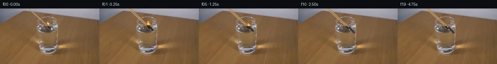

![首帧]()

Round 00
2026-11-05T03:15:13.373318+00:00像素候选变化代码 +233/−0inspection 更新
pixels c8ab9ad3c4a0acec · code 6beeb1c9fd677585
查看本轮 generate.py 真实 diff
--- previous/generate.py
+++ current/generate.py
@@ -0,0 +1,233 @@
+#!/usr/bin/env python3
+"""Generate a 20-frame pixel continuation of the match/water demonstration.
+
+All synthesis is local and deterministic. The source photograph remains the
+locked background; OpenCV inpainting removes the original flame locally, and
+Pillow supersampled vector/raster compositing redraws the sliding match,
+shrinking flame, ripples, refraction tint, and smoke.
+"""
+
+from pathlib import Path
+import math
+
+import cv2
+import numpy as np
+from PIL import Image, ImageDraw, ImageFilter
+
+from artifact_io import save
+
+
+ROOT = Path(__file__).resolve().parent
+W, H = 256, 144
+S = 4 # antialiasing scale for generated overlays
+
+
+def clamp_u8(a):
+ return np.clip(np.rint(a), 0, 255).astype(np.uint8)
+
+
+def ease(x):
+ x = min(1.0, max(0.0, x))
+ return x * x * (3.0 - 2.0 * x)
+
+
+def rgba_layer():
+ return Image.new("RGBA", (W * S, H * S), (0, 0, 0, 0))
+
+
+def xy(p):
+ return tuple(int(round(v * S)) for v in p)
+
+
+def composite(base, overlay):
+ small = overlay.resize((W, H), Image.Resampling.LANCZOS)
+ return np.asarray(Image.alpha_composite(Image.fromarray(base).convert("RGBA"), small).convert("RGB"))
+
+
+def clean_background(src):
+ """Remove the initial flame only, retaining glass/water and the match axis."""
+ bgr = cv2.cvtColor(src, cv2.COLOR_RGB2BGR)
+ mask = np.zeros((H, W), np.uint8)
+ # Compact flame: preserve most of the shaft and the reflective rim.
+ cv2.ellipse(mask, (126, 38), (5, 9), -12, 0, 360, 255, -1)
+ # Telea reconstruction is confined to this tiny region.
+ fixed = cv2.inpaint(bgr, mask, 3, cv2.INPAINT_TELEA)
+ return cv2.cvtColor(fixed, cv2.COLOR_BGR2RGB)
+
+
+def draw_match(frame, d, underwater_strength):
+ """Redraw match along the original diagonal, with its head deeper in water."""
+ lay = rgba_layer()
+ dr = ImageDraw.Draw(lay, "RGBA")
+ # Match stays on the original axis. The junction moves down-right as it is lowered.
+ joint = (123.7 + d, 42.0 + d * 0.94)
+ # Exposed wooden shaft, multi-tone for cylindrical highlight.
+ dr.line([xy((76.5, -3)), xy(joint)], fill=(91, 58, 26, 150), width=3 * S)
+ dr.line([xy((76.5, -3)), xy(joint)], fill=(196, 154, 90, 255), width=2 * S)
+ dr.line([xy((77.0, -3)), xy((joint[0] + .3, joint[1] - .3))], fill=(235, 202, 139, 150), width=max(1, S // 2))
+
+ # Wet match head; a broad brown under-edge and nearly black core.
+ tip = (joint[0] + 13.2, joint[1] + 13.8)
+ dr.line([xy((joint[0] - .3, joint[1] - .2)), xy(tip)], fill=(64, 31, 16, 230), width=5 * S)
+ dr.line([xy(joint), xy(tip)], fill=(24, 25, 23, 245), width=3 * S)
+ dr.ellipse([xy((tip[0] - 1.9, tip[1] - 2.1)), xy((tip[0] + 1.8, tip[1] + 2.0))], fill=(19, 23, 22, 210))
+ frame = composite(frame, lay)
+
+ # Looking through water lowers contrast and gives a subtle cool cast.
+ water = rgba_layer()
+ wd = ImageDraw.Draw(water, "RGBA")
+ a = int(22 + 22 * underwater_strength)
+ wd.line([xy((joint[0] + .5, joint[1] + .5)), xy((tip[0] + 1, tip[1] + 1))], fill=(145, 165, 168, a), width=5 * S)
+ return composite(frame, water), joint, tip
+
+
+def draw_flame(frame, joint, t, index):
+ """Draw an irregular shrinking flame. t=0 is full, t=1 extinguished."""
+ if t >= 0.995:
+ return frame
… diff truncated; 146 more lines …